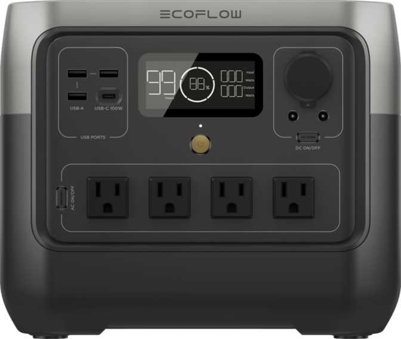
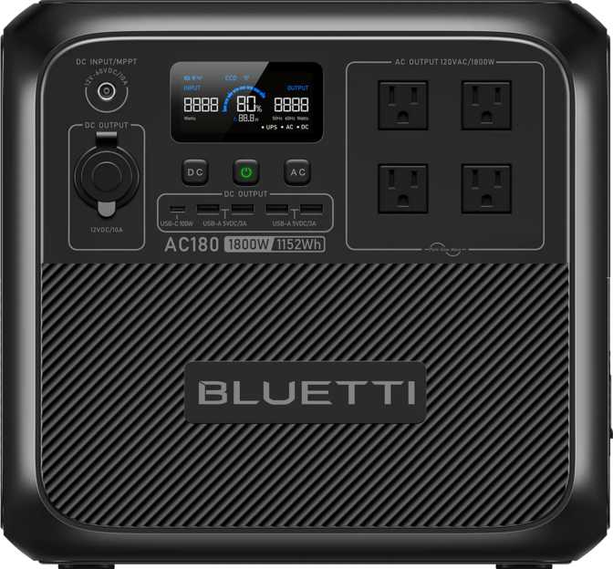

The Modern Camping Essential
Gone are the days when camping meant completely disconnecting. Today, we bring drones, cameras, CPAP machines, and electric coolers. To keep everything running without the noise of a gas generator, you need a solid portable power station.
Based on our database of over 90 models, here are the top picks for camping this year.
1. The All-Rounder: Jackery Explorer 1000 v2
Jackery is synonymous with camping. The Explorer 1000 v2 is the updated version of their classic model. It strikes the perfect balance between weight and capacity. It is light enough to carry from the car to the campsite but powerful enough to run a coffee maker.

View Jackery Explorer 1000 v2 Specs
2. The Fast Charger: EcoFlow River 2 Pro
If you forget to charge your gear before leaving home, the EcoFlow River 2 Pro is your savior. It charges from 0% to 100% in roughly an hour. It is significantly smaller than the Jackery, making it ideal for weekend trips where space is tight.

View EcoFlow River 2 Pro Specs
3. The Value King: Bluetti AC180
Bluetti has been crushing it with price-to-performance. The AC180 offers a massive AC output for its size, meaning you can run high-wattage appliances like a hair dryer or a portable kettle that other stations in this size class might struggle with.

4. The Long-Lifer: Anker Solix C1000
Anker's "Solix" line is built to last. The C1000 uses advanced LiFePO4 batteries rated for thousands of cycles. Its hyper-compact design (it's shorter than most competitors) makes it easy to pack into a trunk full of camping gear.

Conclusion
If you need speed, go with EcoFlow. If you want a compact shape, go Anker. But for the classic reliable camping experience, the Jackery remains a top contender.